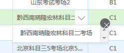

为表格添加序号 {{ d.LAY_INDEX }}，可以使用自定义模板 templet ，templet 提供了三种使用方式：
<script type="text/html" id="XuHao">
{{ d.LAY_INDEX }}
</script>
table.render({
elem: '#TList'
,url: 'data/role.json'
,cols: [[
{field:'XH', title: '序号', width:60, sort: true, templet: '#XuHao'}
,{field:'Name', title: '角色名称', width:150, sort: true}
,{field:'Desc', title: '角色描述'}
]]
,skin: 'row'
,even: true
});
table.render({
elem: '#TList'
,url: 'data/role.json'
,cols: [[
{field:'XH', title: '序号', width:60, sort: true
,templet: function(d){
return d.LAY_INDEX
}
}
,{field:'Name', title: '角色名称', width:150, sort: true}
,{field:'Desc', title: '角色描述'}
]]
,skin: 'row'
,even: true
});
注意：这里一定要被一层 <div></div> 包裹，否则无法读取到模板
table.render({
elem: '#TList'
,url: 'data/role.json'
,cols: [[
{field:'XH', title: '序号', width:60, sort: true, templet: '<div>{{ d.LAY_INDEX }}</div>'}
,{field:'Name', title: '角色名称', width:150, sort: true}
,{field:'Desc', title: '角色描述'}
]]
,skin: 'row'
,even: true
});
在数据渲染完的回调函数 done 中进行判断并设置
table.render({
elem: '#TList'
,url: 'data/computer.json'
,cols: [[
{field:'XH', title: '序号', width:60, sort: true, templet: '<div>{{ d.LAY_INDEX }}</div>'}
,{field:'KCName', title: '所属考场', width:200, sort: true}
,{field:'BianHao', title: '机器编号', width:90, sort: true}
,{field:'IP', title: 'IP地址', width:110, sort: true}
,{field:'MAC', title: 'MAC', width:135, sort: true}
,{field:'LeiXing', title: '终端类型', width:90, sort: true}
,{field:'State', title: '机器状态', width:90, sort: true, templet: '#StateTpl'}
,{field:'desc', title: '说明'}
,{fixed: 'right', title: '操作', width:120, toolbar: '#ColAction'}
]]
,skin: 'row'
,even: true
,done: function(res){
$('.layui-table-main .layui-table tr').each(function(i){
var stateObj = $(this).find('td:eq(6)'), stateTxt = $(this).find('td:eq(6) .layui-table-cell').text();
if(stateTxt.indexOf('申请') > -1){
$(stateObj).addClass('color-1');
}
if(stateTxt.indexOf('禁用') > -1){
$(stateObj).addClass('color-2');
}
})
}
});
可以通过修改 .layui-table-cell 的样式实现，并在数据渲染完的回调函数 done 中进行调用；
缺点：列固定效果会出现问题，所以如果让单元格内容换行显示，只能取消列固定效果；
.layui-table tbody .layui-table-cell.tdhh{
height:auto;
line-height:22px;
white-space:normal;
}
table.render({
elem: '#userList'
,url: 'data/user.json'
,cols: [[
{field:'XH', width:60, title: '序号', toolbar: '#XuHao', sort: true}
,{field:'Name', width:120, title: '姓名', sort: true}
,{field:'Sex', width:60, title: '性别', sort: true}
,{field:'SFZ', width:150, title: '身份证号'}
,{width:155, title: '操作', toolbar: '#ColAction'}
]]
,skin: 'row'
,even: true
,done:function(){
$('.layui-table tbody .layui-table-cell').addClass('tdhh');
}
});
{
"code": 0,
"msg": "",
"count": 150,
"data": [
{"Name":"考试员", "GLBM":"河北交警总队", "Time":"08:30:00-18:00:00", "Desc":"", "State":"正常"},
{"Name":"操作员", "GLBM":"石家庄交警支队", "Time":"13:30:00-15:30:00", "Desc":"", "State":"停用"},
{"Name":"普通管理员", "GLBM":"河北交警总队", "Time":"08:30:00-18:00:00", "Desc":"", "State":"正常"},
{"Name":"配置管理员", "GLBM":"河北交警总队", "Time":"08:00:00-21:00:00", "Desc":"", "State":"正常"},
{"Name":"超级管理员", "GLBM":"石家庄交警支队", "Time":"不限", "Desc":"", "State":"正常"}
]
}
去除‘点击查看单元格中隐藏内容的效果’，即去除下面图中的效果
通过修改CSS实现
.layui-table-grid-down{
width: 0;
height: 0;
overflow: hidden;
}